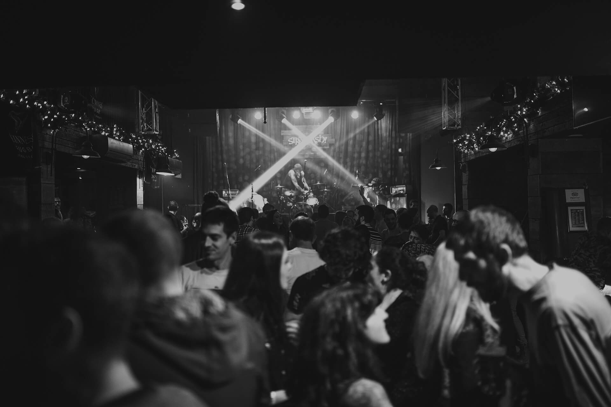
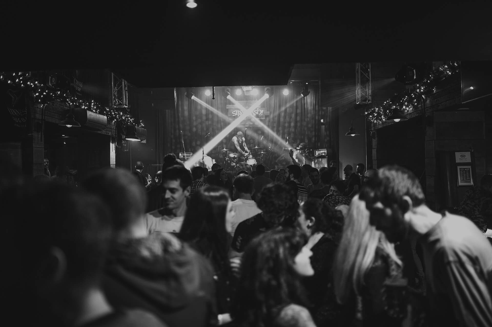
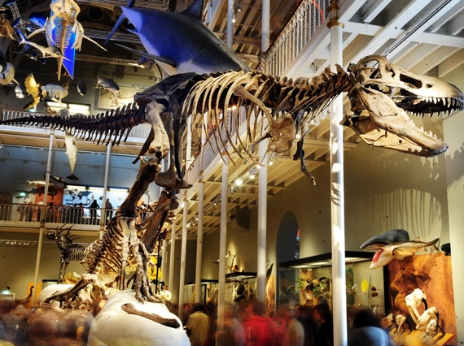
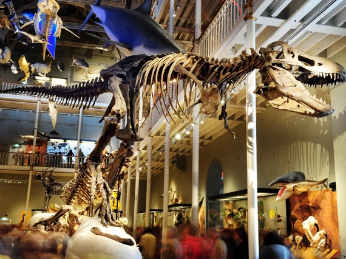

Attractions

Check out Edinburgh’s must-see spots — whether it’s hiking up Arthur’s Seat, wandering down the Royal Mile, or discovering hidden bookstores, there's always something cool to explore!
A student's guide to the city


 



 



I am an international student studying at the University of Edinburgh, and I have been living in this enchanting city for two years. Edinburgh feels like it’s straight out of a fairytale, with its stunning architecture, rich history, and vibrant culture. In my time here, I’ve fallen in love with exploring the city’s hidden gems, from cozy cafes and delicious restaurants to its many lesser-known treasures. I hope this guide helps you experience the magic of Edinburgh just as I have!
Check out Edinburgh’s must-see spots — whether it’s hiking up Arthur’s Seat, wandering down the Royal Mile, or discovering hidden bookstores, there's always something cool to explore!
From cozy cafes to amazing Thai, Japanese, and Indian spots, Edinburgh’s food scene is full of surprises — and don’t forget the desserts!
Whether you're into lively pubs, chilled jazz bars, or energetic clubs, Edinburgh’s nightlife has something for everyone — and all kinds of crowds to match!